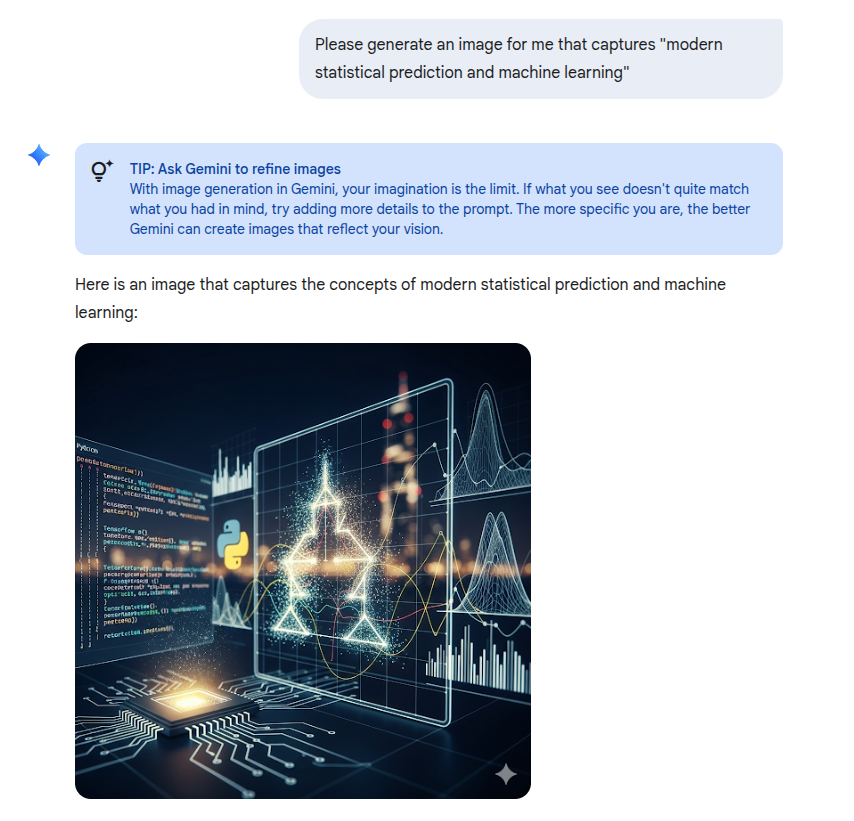
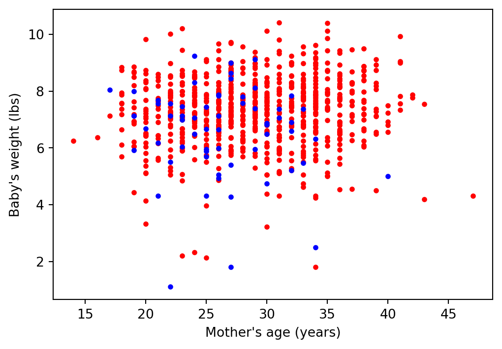
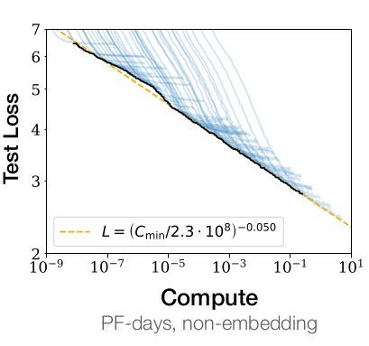

| mage | habit | weight |
|---|---|---|
| 34 | nonsmoker | 6.96 |
| 31 | nonsmoker | 8.86 |
| 36 | nonsmoker | 7.51 |
| 31 | nonsmoker | 6.75 |
| 26 | nonsmoker | 6.69 |
Class introduction
What is this class?
This class is called “Modern Statistical Prediction and Machine Learning.”
What do these words mean?
Obligatory ML intro slide

A simple example
Beginning with these complex applications can obscure what we mean by “statistical prediction.” So let’s begin with a much simpler example.
Every year, the US releases to the public a large data set containing information on births recorded in the country.
This is a random sample of 1,000 cases from the 2014 data set.
\(\vdots\)
Plot of the data

Three things we could do with this dataset
- Regress
weight ~ 1 + mage + habit. - If
habitis statistically significant, warn mothers not to smoke.
- Regress
- Regress
weight ~ 1 + mage + habit. - For a given mother, compute the expected baby weight. If it is low, recommend extra monitoring during the pregnancy.
- Regress
- Define a variable
low_weight = weight < 4. - Run the logistic regression
low_weight ~ 1 + mage + habit. - For a given mother, compute the expected probability of low birth weight. If this probability is high, recommend extra monitoring during the preganancy.
- Define a variable
Questions:
- Which (if any) of these tasks is prediction?
- Which (if any) of these tasks is machine learning?
- Which (if any) is statistical?
- Which (if any) is modern?
Be prepared to discuss and justify your answers.
Prediction versus inference
This class will study prediction, which is different from inference.
Note that examples A and B both use the same statistical procedure:
- Regress
weight ~ 1 + mage + habit.
But one is inference and one is prediction because of how you use the model.
Prediction versus inference
| Prediction | Inference |
|---|---|
| Predict baby weight and take an action | Interpret the weight coefficient causally |
| You only care about \(\hat{f}(x_*)\) | You give meaning to some components of \(\hat{f}(x_*)\) |
| Features correlated with the “true” features are just as good | Correlation does not imply causation |
| The generative process may be misspecified | The interpretation is only valid if the generative process is roughly correct |
This class is about prediction not inference!
Prediction and supervised learning
Supervised learning
In this course, “prediction” always take the following form:
- A fixed set of observed pairs \(\{(x_n, y_n)\}\), \(n=1,\ldots,N\).
- A (maybe hypothetical) set of \((x_*, \cdot)\) for which we want to guess or estimate the missing \(y_*\).
We use the observed data \(\{(x_n, y_n)\}\) to produce a function \(\hat{f}(\cdot)\) which we hope to use as a prediction
\[\hat{f}(x_*) =: \hat{y}_* \overset{\textrm{(hopefully)}}{\approx} y_* \].
This is also called supervised learning.
What is machine learning? What is prediction?
Machine learning
Supervised learning is a large but proper subset of machine learning (ML).
ML also (at least) encompasses reinforcement learning and unsupervised learning.
This class will almost entirely focus on supervised learning, though I will try to work some unsupervised learning problems into the homework.
Here are some classical contemporary ML applications:
- Recognizing digits from pixelized images
- Generating human–like text
- Finding cancer cells in an MRI image
- Automatically identifying the topics in a NYT article
- Finding genes with similar patterns of expression over time
- Learning to play Go
Which of these are supervised learning? Which are not? Among those that are, what are the \(x\)? What are the \(y\)?
Classification versus regression
Both tasks B and C are being used for “classification”, since we are ultimately using our models to identify mothers who are at-risk for low birth weight babies.
However, in this class we will use these terms to describe the model, not the ultimate use.
Regression and classification
Regression will mean a case where \(y_n\) takes values in \(\mathbb{R}^{}\).
Classification will mean a case where \(y_n\) takes values in an unordered, finite set (in this class, typically \(\{0, 1\}\)).
What is statistical?
None of these three procedures are inherently statistical. For example, you can use the OLS coefficients as descriptive statistics for this particular dataset, with no notion of random sampling.
But we all intuitively know that when we apply these results to future mothers, those mothers will be different somehow than the mothers we observed in this dataset.
How will they be different? As always, it depends how you use your model:
- The mothers may be observed at a different time (e.g. after these data were collected)
- The mothers may be from completely different populations (e.g. in another country)
- The mothers may be a different species (e.g. what happens if you expose a guinea pig to cigarette smoke)?
Quantifying these potential differences is hard.
What is statistical?
One way to imagine how the observed sample differs from the future population is to imagine that both are independent and identically distributed (IID) samples from the same population.
Statistics for ML
\[ (x_n, y_n) \overset{\mathrm{IID}}{\sim}p(x, y) \quad\textrm{and}\quad (x_*, y_*) \sim p(x, y) \quad\textrm{for the same }p. \]
An assumption of IID sampling is:
- Mathematically (fairly) tractable
- Usually false
- Maybe not a totally insane approximation to real–world variation
- Perhaps a plausible lower bound on the variation you really expect.
In this class, we will typically assume IID sampling, but keep an eye out for the consequences if it fails to hold.
An urgent example
“The AI is trained on the corpus of what scholarly written work there already is about the strategy of war,” says Schneider. “And the vast majority of that work looks at escalation — there is definitely a bias toward it. There aren’t as many case studies on why war didn’t break out — the Cuban Missile Crisis is one of the few examples. The LLMs are mimicking these core themes.”
“The AI Doomsday Machine Is Closer to Reality Than You Think.” Politico, Sep 2 2025
What is statistical?
A lot of statistics classes begin by assuming there is a “true” parametric model for \(p(x, y)\) or for \(p(y\vert x)\).
For example, in an introductory linear regression class, you might see:
\[ \textrm{Assume } y_n = \boldsymbol{\beta}^\intercal\boldsymbol{x}_n + \varepsilon_n \quad\textrm{for}\quad\varepsilon_n \overset{\mathrm{IID}}{\sim}\mathcal{N}\left(0, \sigma^2\right). \]
Statistics for ML
ML does not assume that we have access to the correct generative model!
In this sense, “statistical ML” can be thought of as the study of prediction methods under IID sampling and model misspecification.
Despite this, studying what would happen if such assumptions hold can provide some nice intuition that we might hope generalizes.
What is modern?
Before 2015, I believed a list of truths about machine learning:
- Good prediction balances bias and variance.
- You should not perfectly fit your training data as some in-sample errors can reduce out-of-sample error.
- High-capacity models don’t generalize.
- Optimizing to high precision harms generalization.
- Nonconvex optimization is hard in machine learning.
None of these are true. Or certainly, none are universal truths. … Given all of this evidence, why did we teach our undergrads a paradigm completely invalidated by empirical evidence? I don’t have an answer to that question.
Massive compute power, deep neural nets + stochastic gradient descent, and frictionless reproducibility have laid bare some major shortcomings in the theory we’ll be learning in this class.
ML theory and ML engineering
One might imagine two different kinds of ML course:
- ML Engineering:
- Coding best practices
- Optimization best practices
- Data pipelines
- Matching tasks with model classes
- Lots of real-world practice
- ML Theory:
- Articulate and criticize assumptions implicit in ML practice
- Identify the key tradeoffs in ML methods
- Thorough study of simple mathematical models that one might hope are proxies for more complex situations
- A clear and rigorous vocabulary for comparing and analyzing ML methods
- Capacity to quickly learn and think about ML methods you’ve never seen before
Ideally, you need to learn both!
This will be an ML theory class with a dose of ML engineering in the labs.
The bitter lesson

From Kaplan et al. (2020) Figure 1. The scaling of loss with compute is real, but slow!
A reliance on brute force computation puts the power of ML in the hands of private and wealthy institutions.
If we are to escape this fate, theory will almost certainly have to play a role.
Bibliography
Kaplan, J., S. McCandlish, T. Henighan, T. Brown, B. Chess, R. Child, S. Gray, A. Radford, J. Wu, and D. Amodei. 2020. “Scaling Laws for Neural Language Models.” arXiv Preprint arXiv:2001.08361.